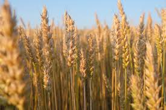

Millet (बाजरा)
Harvesting
Machine & Manual
Fertilization
NPK @ 20 Kg/Acre
- Watermelon is one of the most widely cultivated Zaid crops, loved for its sweet, juicy fruits during the
hot summer season. Belonging to the Cucurbitaceae family, it has African origins but is now grown globally.
Its high water content makes it an essential summer fruit. India is among the top producers, with
cultivation concentrated in states like Uttar Pradesh, Madhya Pradesh, Karnataka, and Maharashtra.
- Watermelon requires a warm and dry climate with abundant sunshine. The ideal temperature for growth is
24°C–30°C, while cooler temperatures below 18°C reduce germination and growth. Excess rainfall or high
humidity during fruiting can cause fungal diseases and reduce sweetness. Hence, it is best cultivated in the
hot and dry months of March–June when bright sunlight ensures high sugar content in fruits.
- Watermelon needs moderate irrigation in the early stages of growth, especially during germination,
flowering, and fruit setting. However, during fruit maturity and ripening, irrigation should be reduced or
stopped to enhance sweetness and avoid cracking of fruits. On average, watermelon requires 400–600 mm of
water during its life cycle. Sandy loam soils with good drainage are most suitable since the crop is highly
sensitive to waterlogging.
- Watermelon is mainly a Zaid crop in India, sown in February–March and harvested in May–June. The crop
matures in 70–90 days, making it suitable for short summer seasons. In southern India, with irrigation
facilities, watermelon can also be grown during other months, but its demand peaks in Zaid season due to
extreme heat.
- Watermelon contains about 92% water and is rich in Vitamin A, Vitamin C, potassium, and lycopene (a
powerful antioxidant). It hydrates the body, boosts immunity, and supports heart health. Economically,
watermelon is a high-demand fruit in summer, giving farmers good profits due to short duration, high yield,
and strong market prices. It is also used in juice, smoothies, and the beverage industry, increasing its
value chain beyond direct fruit sales.
